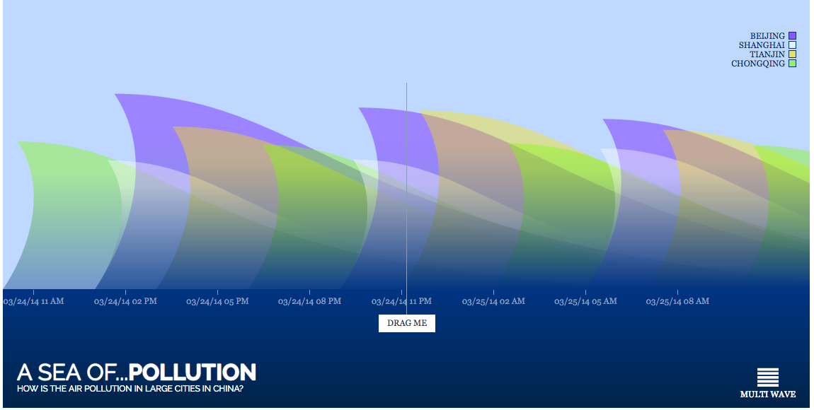

User Feedback
At first, we planed to use the dataset from the Mission China air quality monitoring program, which is a dataset that only have PM 2.5 data, and wanted to use histograms to present the data:
We planed to show the graph for each city, and the user can choose a tab to see the result of each city. However, our users had some questions about the graph:
 Figure 5: Badly designed visualization of PM2.5 distribution over year.
Figure 5: Badly designed visualization of PM2.5 distribution over year.
- It’s not clear to everyone that where the Chinese cities are by merely showing them the names of the cities. Though most people knew cities like Beijing or Shanghai, many people have no idea where the rest smaller cities are. Due to this feedback, we decided to present the data by plotting it on a map.
- Many people have a question that why we only use PM2.5 to represent the concept “air pollution”, since air pollution is a combination of serval different polluted particles. Thus, we decided to use another data set that can better represent the concept of air pollution, also produced an interactive feature that people can see data from different sources of air pollution.
- Some people questioned that how much impact PM 2.5 has. Since it could be normal that there is a certain amount PM2.5 in our environment, it’s not so clear to them how much concentration of PM2.5 will cause a hazard to health. One solution is to run a regression of the ratio population that has health diseases that caused by air pollution to the concentration of PM2.5. However, considering to better give people an intuition of heath risk, we choose to directly present the value of PM2.5 of each day and show how serious it is by indicating if it reaches the levels that cause health problems.
-
After presentation, we found many people were confused about the visualization of waves of pollution. People tended to think the downward slope of the wave represent the value of PM 2.5 is lower. As following picture:
Figure 6: previous version of representing daily pollution data. (The graph use waves to show the AQI for each city in every 3 hours. Each peak of waves represents a data point, when the peak is higher, the danger of air pollution to health is higher. Except the peak, other positions of the waves don’t represent any data point.)
Thus, we decided to change the way to represent daily pollution data in our final version of visualization. Instead of using wave, we use circles to represent a data point, which is more intuitive – each circle is a data point, and the radius and height of the circle represent the value of the pollution. When a circle is bigger and higher, the pollution is more serious. The analogy of the circles is that, one circle is like a bubble, when there is more air (pollution) in a bubble, the bubble flies higher. In addition, the redundancy of using radius and height to represent the same value is to make the main idea of the graph more obvious, so we can make sure our readers can get the central idea of the graph, which is the comparison of AQI in four cites. Finally, the new graph still keeps the features that people can see the change of pollution within a day by looking at the heights of bubbles, and also can compare the air quality between four cities by looking at the radius of the bubbles.